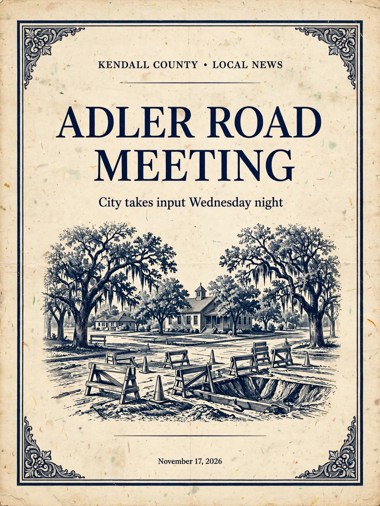

City of Boerne hosts Adler Road meeting November 18
City of Boerne hosts Adler Road meeting November 18
The City of Boerne hosts a public meeting on Phase 2 of the Adler Road reconstruction project on Wednesday, November 18. The come-and-go meeting runs from 5 to 7 p.m. at Curington Elementary School, 601 Adler Road, per the city's announcement.
With design of the project nearing completion, city staff will discuss the expected construction timeline and the city's efforts to minimize unnecessary tree removal. Staff will also answer questions from residents and gather feedback on the project, per the announcement.
The project is the complete reconstruction and widening of Adler Road from Esser Road to Main Street. It includes a continuous center turn lane, drainage improvements, multi-use sidewalks, and a shared use path, per the city.
Residents approved the Adler Road project as part of the 2022 Quality of Life Bond program, a voter-approved borrowing package for city projects. The city identifies Adler Road as one of its primary east-west corridors. The road was picked for improvements based on its Pavement Condition Index of 22 out of 100, a pavement condition score, along with citizen survey feedback and the need for drainage improvements along the route, per the city.
Earlier this year, the city completed two new culverts along Adler Road, one at Currey Creek and one at No Name Creek. The new culverts are larger than the previous structures and lifted the roadway out of the 100-year floodplain at those locations. The culvert projects were separate from the Adler Road reconstruction bond project, per the city.
What happens next: residents can review the Phase 2 plans and give feedback at the meeting on Wednesday, November 18, from 5 to 7 p.m. at Curington Elementary School.
Sources
- City of Boerne, City to host public meeting Nov. 18 to discuss Adler Road project (My Boerne News): https://myboernenews.com/city-to-host-public-meeting-nov-18-to-discuss-adler-road-project/
- Boerne Star, City seeks input on Adler Road (November 12, 2026): https://www.boernestar.com/article/14570,city-seeks-input-on-adler-road